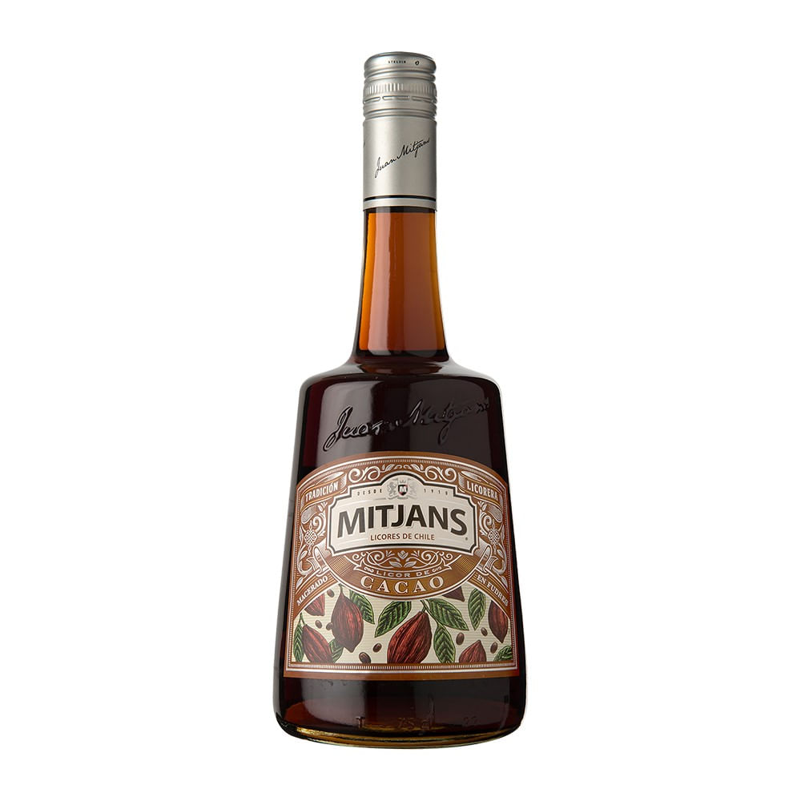
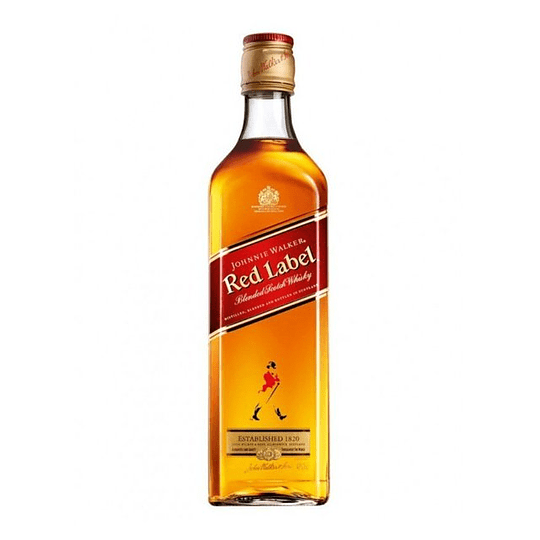
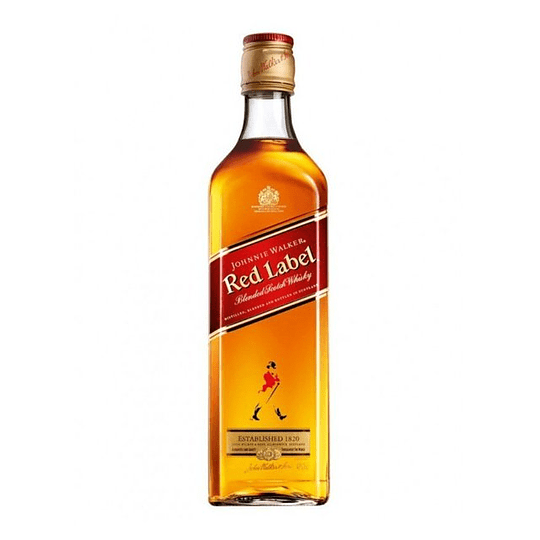

Bienvenido a Te lo vendo
El año 2021 creamos una distribuidora de licores y bebidas, Botilleria te lo vendi S.A, enfocada en atender a empresas (Restaurantes, bares y banqueteras), mercado donde llegamos a ser un actor relevante, atendiendo a muchos restaurantes y bares reconocidos junto a las más grandes banqueteras de Santiago. Pero queríamos llegar a ustedes, a las personas en sus casas. Nos pusimos a investigar y veíamos a muchos vendiendo botellas por internet, simples catálogos en línea, sin emoción, sin alma, promoción de precio y descuentos sobre precios inflados para que tu creyeras que estaba más barato, pero nada más. Queríamos hacer algo distinto, y salimos a preguntarles a ustedes, ¿con que te conectas cuando tomas algo?. Fue asombroso ver como la gran mayoría se conecta con espacios de compartir en grupo, reír, recordar, juntarse, gritar, volver a compartir, volver a reír etc. Pensamos: compartir, reír, juntarse. Celebrar, ¡Entreguemos esa alegría de celebrar y de compartir, seamos un facilitador de una nueva oportunidad de brindar! Como todas las palabras que rimaban con brindar estaban ocupadas en internet, tuvimos que agarrar otros idiomas, llegamos a la idea de brindar en inglés, o sea, TOAST… pero chilenizamos el termino y nació TOST. ¡Gol, Nos encantaba! Y nuestra jefa de diseño tuvo la gran idea de que la letra S chocara con la O y así pudieramos representar con las pestañas, el choque de ambos, lo que simboliza el sonido de dos o más vasos al hacer brindis. Uf, ya no era gol, ¡era golazo!. eveniet molestias inventore quas repellendus dicta dolor, quasi consequuntur. Corrupti aperiam dolor quae in aliquam omnis similique.
Galeria
 
